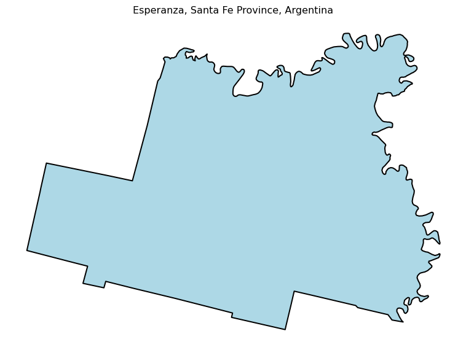
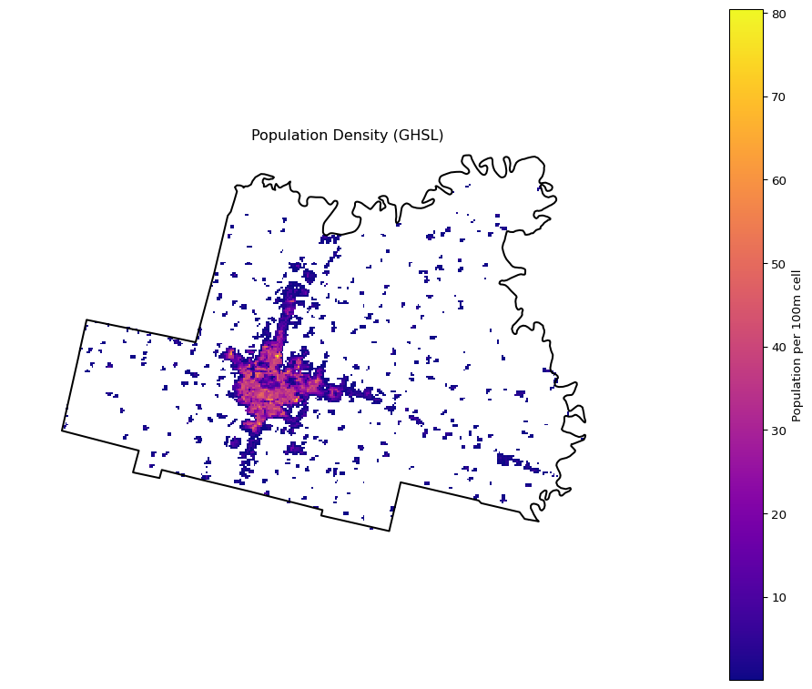
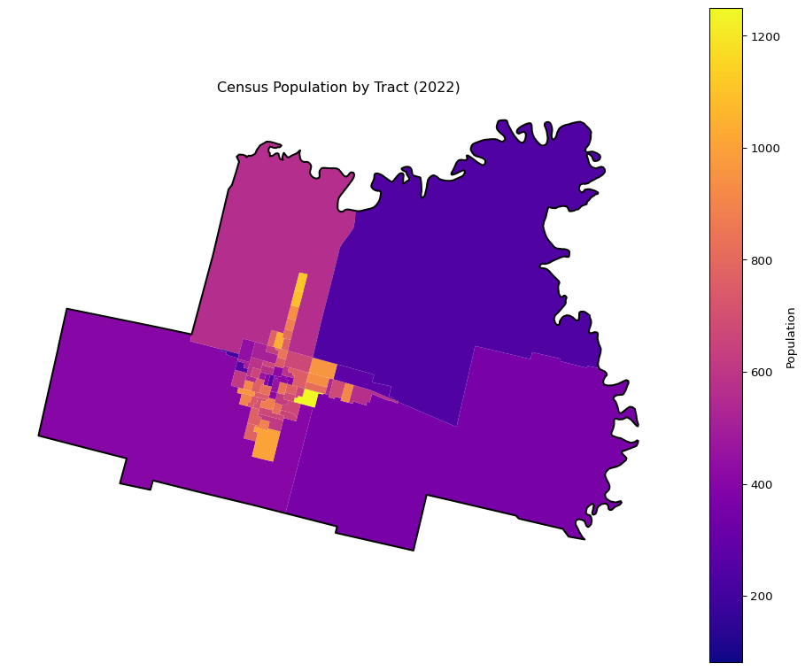
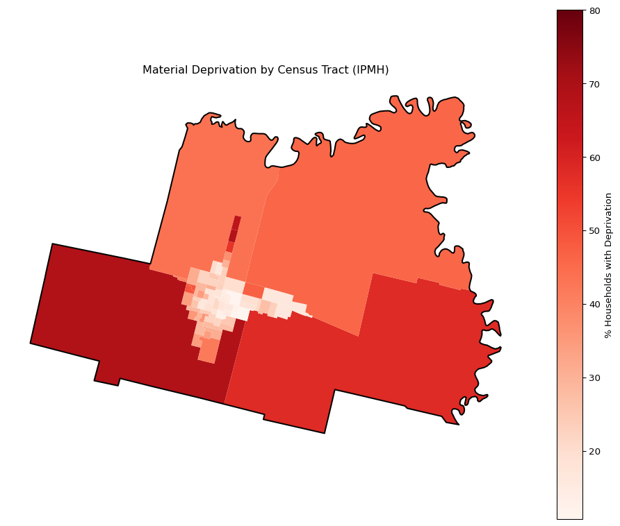
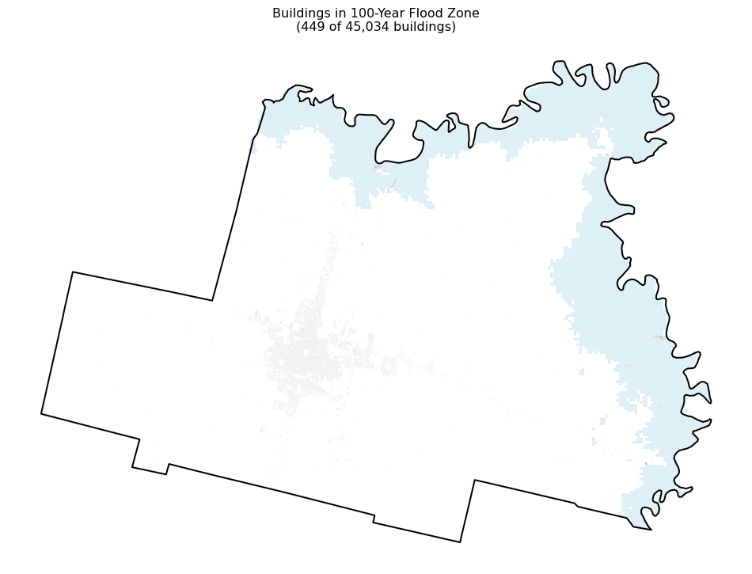
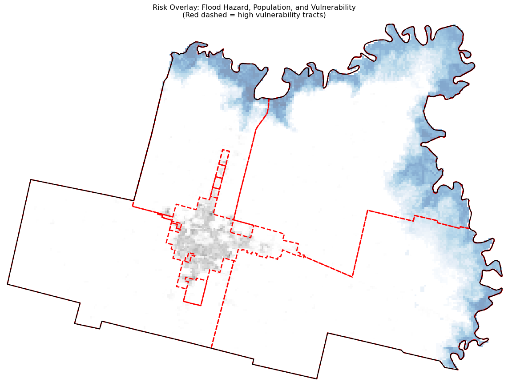

After completing this chapter, you will understand the key concepts of exposure, vulnerability, hazard, and risk. You will learn how to measure these concepts with data and how to combine them to identify areas of elevated climate risk. We demonstrate these concepts through a case study of riverine flood risk in Esperanza, a small city in Argentina’s Santa Fe Province.
What is Climate Risk?
Climate risk is the intersection of three factors: exposure, vulnerability, and hazard.1 You can visualize risk as the overlap of three layers: where hazards occur, who or what is exposed to them, and how vulnerable those exposed populations or assets are. The areas where all three factors overlap represent the highest risk.
Risk is complicated and multidimensional. A wealthy neighborhood in a flood zone may have high exposure but relatively low risk because residents have resources to evacuate, insure their property, and rebuild. A poor neighborhood on higher ground may have lower exposure but face greater consequences when floods do reach them. Understanding risk requires understanding all three components and how they interact.
In the following sections, we explain each component and demonstrate how to measure it using open data. We use the city of Esperanza in Santa Fe Province, Argentina as our case study throughout.
Setup and Data Loading
We begin by downloading our case study data. This dataset includes the municipal boundary, flood hazard maps, population density, and land cover for Esperanza.
import zipfilefrom pathlib import Pathimport urllib.requestfrom io import BytesIOimport geopandas as gpdimport rioxarrayimport numpy as npimport pandas as pdimport matplotlib.pyplot as pltfrom rasterio import featuresfrom shapely.geometry import shapefrom shapely.ops import unary_union# Download and extract Esperanza dataurl ="https://arg-fulbright-data.s3.us-east-2.amazonaws.com/esperanza/datos_esperanza_3857.zip"extract_dir = Path("datos_esperanza")extract_dir.mkdir(exist_ok=True)with urllib.request.urlopen(url) as response: zip_data = response.read()with zipfile.ZipFile(BytesIO(zip_data), "r") as zip_ref: zip_ref.extractall(extract_dir)print(f"Data extracted to {extract_dir}")
fig, ax = plt.subplots(figsize=(8, 6))limite_esperanza.plot(ax=ax, facecolor="lightblue", edgecolor="black", linewidth=1.5)ax.set_title("Esperanza, Santa Fe Province, Argentina")ax.axis("off")plt.tight_layout()plt.show()

Exposure
The Sendai Framework defines exposure as the situation of people, infrastructure, housing, production capacities, and other tangible human assets located in hazard-prone areas.2 The simplest measure of exposure is population: how many people live in areas that could be affected by a hazard?
Population Density
Our dataset includes a population density raster derived from the Global Human Settlement Layer (GHSL) [@ghsl_population_2023], which provides population estimates at 100-meter resolution by combining census data with satellite imagery of built-up areas.
# Mask zero and nodata valuespop_masked = densidad_poblacion.where(densidad_poblacion >0)# Calculate total populationtotal_pop =float(pop_masked.sum())print(f"Estimated population in Esperanza: {total_pop:,.0f}")
Estimated population in Esperanza: 46,862
Show visualization code
fig, ax = plt.subplots(figsize=DEFAULT_FIGSIZE)pop_masked.plot( ax=ax, cmap="plasma", add_colorbar=True, cbar_kwargs={"label": "Population per 100m cell"})limite_esperanza.plot(ax=ax, facecolor="none", edgecolor="black", linewidth=1.5)ax.set_title("Population Density (GHSL)")ax.axis("off")plt.tight_layout()plt.show()

Census Data
While gridded population estimates give us fine spatial resolution, Argentina’s 2022 national census provides official population counts by census tract (radio censal). Census data complement gridded estimates: the census is authoritative but coarse (it assumes uniform distribution within tracts), while gridded data are finer but model-dependent.
import duckdbcon = duckdb.connect()for cmd in ["INSTALL spatial","LOAD spatial","INSTALL httpfs","LOAD httpfs","SET s3_region='us-east-1'","SET s3_endpoint='data.source.coop'","SET s3_use_ssl=true","SET s3_url_style='path'",]: con.execute(cmd)# Get bounding box for querybounds = limite_esperanza.to_crs(WGS84_CRS).total_bounds# Query census data from Source Coopquery =f"""SELECT COD_2022, POB_TOT_P, ST_AsWKB(geometry) as geometryFROM 's3://nlebovits/censo-argentino/2022/radios.parquet'WHERE ST_XMax(geometry) >= {bounds[0]} AND ST_XMin(geometry) <= {bounds[2]} AND ST_YMax(geometry) >= {bounds[1]} AND ST_YMin(geometry) <= {bounds[3]}"""df = con.execute(query).fetchdf()df["geometry"] = gpd.GeoSeries.from_wkb(df["geometry"].apply(bytes))census_tracts = gpd.GeoDataFrame(df, geometry="geometry", crs=WGS84_CRS)census_tracts = census_tracts.to_crs(USE_CRS)census_tracts = gpd.clip(census_tracts, limite_esperanza)census_pop = census_tracts["POB_TOT_P"].sum()print(f"Census population: {census_pop:,}")
Census population: 50,324
Show visualization code
fig, ax = plt.subplots(figsize=DEFAULT_FIGSIZE)census_tracts.plot( column="POB_TOT_P", ax=ax, cmap="plasma", legend=True, legend_kwds={"label": "Population"})limite_esperanza.plot(ax=ax, facecolor="none", edgecolor="black", linewidth=1.5)ax.set_title("Census Population by Tract (2022)")ax.axis("off")plt.tight_layout()plt.show()

Building Footprints
Another proxy for exposure is building footprints. More buildings generally means more people, though this relationship is imperfect: buildings vary in height, size, and use. A single commercial building might house no residents, while a residential tower might contain hundreds of families.
We use building footprints from the Google-Microsoft-OSM Open Buildings dataset [@google_microsoft_osm_buildings], which combines satellite imagery with machine learning to detect building outlines globally. The data are hosted on Source Cooperative and can be queried directly using DuckDB.
# Query buildings within our bounding box (Source Coop already configured above)buildings_file ="buildings_esperanza.parquet"query =f"""COPY ( SELECT * FROM 's3://vida/google-microsoft-open-buildings/geoparquet/by_country/country_iso=ARG/ARG.parquet' WHERE bbox.xmax >= {bounds[0]} AND bbox.xmin <= {bounds[2]} AND bbox.ymax >= {bounds[1]} AND bbox.ymin <= {bounds[3]}) TO '{buildings_file}' (FORMAT PARQUET);"""con.execute(query)# Load and convert to GeoDataFramebuildings_df = pd.read_parquet(buildings_file)buildings_df["geometry"] = gpd.GeoSeries.from_wkb(buildings_df["geometry"].apply(bytes))buildings = gpd.GeoDataFrame(buildings_df, geometry="geometry", crs=WGS84_CRS)buildings = buildings.to_crs(USE_CRS)# Clip to city boundarybuildings = gpd.clip(buildings, limite_esperanza)total_buildings =len(buildings)print(f"Total buildings in Esperanza: {total_buildings:,}")
Notice that each method produces different information. Population estimates tell us how many people live in an area; building counts tell us how many structures exist. Each has strengths and limitations. The best practice is to use multiple metrics and be transparent about their differences.
Metric
Estimate
Strengths
Limitations
GHSL gridded
{total_pop:,.0f} people
Fine spatial resolution
Model-dependent
Census 2022
{census_pop:,} people
Official data
Coarse resolution
Building footprints
{total_buildings:,} buildings
Individual structures
No population per building
For population exposure, we use the gridded population density because it allows us to identify people within specific flood zones at fine resolution. For structural exposure, we use building footprints to count how many buildings fall within hazard areas.
Vulnerability
The UNDRR defines vulnerability as the conditions determined by physical, social, economic, and environmental factors or processes which increase the susceptibility of an individual, a community, assets, or systems to the impacts of hazards.3
Vulnerability explains why the same hazard affects different people differently. An elderly couple without air conditioning is more vulnerable during a heat wave than a young couple with cooling. A person in a wheelchair living on the ground floor is more vulnerable during a flood than an able-bodied person on an upper floor. Vulnerability operates across multiple dimensions: income, age, health, housing quality, access to transportation, social networks, and more.
Measuring Vulnerability
In well-resourced contexts, vulnerability is often measured using composite indices that combine multiple indicators. The Social Vulnerability Index (SoVI) developed in the United States, for example, synthesizes dozens of demographic and socioeconomic variables into a single score.4
In most of the world, however, comprehensive vulnerability data simply don’t exist. The data required for sophisticated indices—detailed demographic breakdowns, health status, housing characteristics, transportation access—are often unavailable or unreliable.
When data are limited, income or poverty is often the most practical proxy for vulnerability. While wealth is not perfectly correlated with all dimensions of vulnerability (a wealthy elderly person still faces age-related risks), it tends to be strongly associated with many other vulnerability factors and is more widely available than alternatives.
Argentina’s census includes a measure called the Índice de Privación Material de los Hogares (IPMH), which classifies households by material deprivation. We use this as our vulnerability indicator.
# Query deprivation data from Source Coop census dataquery =f"""WITH privacion_data AS ( SELECT id_geo, SUM(CASE WHEN valor_categoria IN ('2', '3', '4') THEN conteo ELSE 0 END) AS hogares_con_privacion, SUM(conteo) AS total_hogares FROM 's3://nlebovits/censo-argentino/2022/census-data.parquet' WHERE codigo_variable = 'HOGAR_IPMH' GROUP BY id_geo HAVING total_hogares > 0)SELECT g.COD_2022, ST_AsWKB(g.geometry) as geometry, p.hogares_con_privacion, p.total_hogares, ROUND((p.hogares_con_privacion * 100.0) / p.total_hogares, 2) AS pct_privacionFROM 's3://nlebovits/censo-argentino/2022/radios.parquet' gJOIN privacion_data p ON g.COD_2022 = p.id_geoWHERE ST_XMax(g.geometry) >= {bounds[0]} AND ST_XMin(g.geometry) <= {bounds[2]} AND ST_YMax(g.geometry) >= {bounds[1]} AND ST_YMin(g.geometry) <= {bounds[3]}"""df = con.execute(query).fetchdf()df["geometry"] = gpd.GeoSeries.from_wkb(df["geometry"].apply(bytes))vulnerability = gpd.GeoDataFrame(df, geometry="geometry", crs=WGS84_CRS)vulnerability = vulnerability.to_crs(USE_CRS)vulnerability = gpd.clip(vulnerability, limite_esperanza)
Show visualization code
fig, ax = plt.subplots(figsize=DEFAULT_FIGSIZE)vulnerability.plot( column="pct_privacion", ax=ax, cmap="Reds", legend=True, legend_kwds={"label": "% Households with Deprivation"})limite_esperanza.plot(ax=ax, facecolor="none", edgecolor="black", linewidth=1.5)ax.set_title("Material Deprivation by Census Tract (IPMH)")ax.axis("off")plt.tight_layout()plt.show()

Limitations and Local Knowledge
Quantitative vulnerability data are inherently limited. No dataset captures the full complexity of why some people are more at risk than others. Social networks, community organizations, local governance capacity, and individual circumstances all matter but are difficult to measure.
This is why local knowledge is essential. A municipal official who knows that a particular neighborhood floods every heavy rain, or that elderly residents in a certain area lack transportation, brings information that no global dataset contains. The quantitative measures we describe here should supplement—not replace—local expertise.
Resilience
Related to vulnerability is the concept of resilience: the ability of a system, community, or society to resist, absorb, accommodate, adapt to, transform, and recover from hazard effects.5
Resilience is not simply the absence of vulnerability. A wealthy city with deep corruption that prevents effective disaster response may have low vulnerability on paper but low resilience in practice. A poor neighborhood with strong social cohesion may rebuild faster after a disaster than a wealthy but fragmented one.
Resilience is especially hard to quantify because it depends on factors like institutional capacity, social cohesion, and political will that don’t appear in standard datasets. For this reason, we focus on exposure and vulnerability in this chapter, while acknowledging that resilience matters for understanding actual outcomes.
Hazard
A hazard is a process, phenomenon, or human activity that may cause loss of life, injury or other health impacts, property damage, social and economic disruption, or environmental degradation.6
Climate-related hazards include flooding, drought, extreme heat, wildfires, sea level rise, and severe storms. These hazards can interact: heat waves can lead to drought, which can increase wildfire risk, which can cause air pollution that affects health. For cities, flooding and extreme heat are typically the most significant climate hazards.
Types of Hazard Data
Hazard data come in two forms: deterministic and probabilistic.
Deterministic data are based on historical records and observations. They tell us what has happened in the past: the maximum flood level recorded, the hottest temperature observed, the areas that have flooded before. Historical data are valuable for understanding past patterns, but they describe the past, not the future.
Probabilistic data use models to simulate possible future scenarios. They estimate the likelihood of different hazard levels—for example, the probability of a flood of a certain depth occurring in any given year. Probabilistic models can incorporate climate projections to account for how hazards are changing.
Historical Flood Events
Our dataset includes the extent of two major historical floods in Esperanza: the 2003 flood and the 2016 flood. These deterministic records show us where flooding has actually occurred.
Our dataset also includes probabilistic flood depth maps for three return periods: 20 years, 100 years, and 500 years. A 100-year return period means that, on average, a flood of that magnitude has a 1% chance of occurring in any given year—not that it happens once per century.
A fundamental challenge for hazard assessment is that climate is changing. Historical patterns no longer reliably predict future conditions.
Climate is inherently a stochastic process—while we can predict average temperatures with high accuracy, we cannot predict the exact temperature on a specific future day. This randomness is irreducible. But climate has traditionally been stationary: the statistical properties of weather (mean temperature, variance, seasonal patterns) remained roughly constant over time.
Climate change makes climate non-stationary: not only is there random variation, but the underlying distribution is shifting. Average temperatures are rising. The frequency and intensity of extreme events are changing. A 100-year flood based on historical records may now occur every 50 or 25 years.
For municipal planning, this means:
Historical data alone is insufficient for planning
Infrastructure designed for historical conditions faces conditions it wasn’t built for
We need to work with scenarios and ranges, not single predictions
Interventions should be robust across multiple possible futures
We discuss approaches for decision-making under this uncertainty in the next chapter.
Important
Global flood models have limitations. They may not capture local drainage infrastructure, recent flood defenses, or small-scale topographic features. Always validate model outputs against local knowledge and historical flood records where available.
Calculating Risk
Risk emerges from the intersection of exposure, vulnerability, and hazard. An area with high hazard but no exposure has no risk—there’s nothing to be damaged. An area with high exposure but no hazard also has no risk—the people and assets aren’t threatened. And even where hazard and exposure overlap, low vulnerability reduces risk.
To calculate risk, we overlay our exposure, vulnerability, and hazard layers and identify where they intersect.
Population in Flood Zones
We calculate how many people live within the flood hazard area for each return period.
def population_in_flood_zone(flood_raster, pop_raster):"""Calculate population within flood zone."""# Align rasters flood_aligned = flood_raster.rio.reproject_match(pop_raster)# Create mask where flood depth > 0 flood_mask = flood_aligned >0# Sum population in flooded cells pop_in_flood = pop_raster.where(flood_mask).sum()returnfloat(pop_in_flood)pop_20 = population_in_flood_zone(profundidad_rp20, densidad_poblacion)pop_100 = population_in_flood_zone(profundidad_rp100, densidad_poblacion)pop_500 = population_in_flood_zone(profundidad_rp500, densidad_poblacion)print(f"Exposed population by return period:")print(f" 20-year: {pop_20:,.0f} ({100*pop_20/total_pop:.1f}%)")print(f" 100-year: {pop_100:,.0f} ({100*pop_100/total_pop:.1f}%)")print(f" 500-year: {pop_500:,.0f} ({100*pop_500/total_pop:.1f}%)")
Exposed population by return period:
20-year: 159 (0.3%)
100-year: 203 (0.4%)
500-year: 236 (0.5%)
Buildings in Flood Zones
We can also count how many structures fall within flood hazard areas. This structural exposure metric is useful for estimating potential property damage.
# Create flood zone polygons from rasterdef raster_to_flood_zone(flood_raster):"""Convert flood raster to polygon geodataframe.""" flood_binary = (flood_raster >0).astype(np.uint8).values[0] shapes =list(features.shapes( flood_binary, transform=flood_raster.rio.transform() )) polygons = [shape(geom) for geom, value in shapes if value ==1]if polygons:return gpd.GeoDataFrame( geometry=[unary_union(polygons)], crs=flood_raster.rio.crs ).to_crs(USE_CRS)return gpd.GeoDataFrame(geometry=[], crs=USE_CRS)flood_zone_100 = raster_to_flood_zone(profundidad_rp100)# Count buildings in flood zoneiflen(flood_zone_100) >0: buildings_in_flood = gpd.sjoin( buildings, flood_zone_100, predicate="intersects", how="inner" ) bldg_100 =len(buildings_in_flood)else: bldg_100 =0print(f"Buildings in 100-year flood zone: {bldg_100:,} ({100*bldg_100/total_buildings:.1f}%)")
Buildings in 100-year flood zone: 449 (1.0%)
Show visualization code
fig, ax = plt.subplots(figsize=DEFAULT_FIGSIZE)# All buildings in graybuildings.plot(ax=ax, facecolor="lightgray", edgecolor="none", alpha=0.5)# Flood zoneiflen(flood_zone_100) >0: flood_zone_100.plot(ax=ax, facecolor="lightblue", edgecolor="none", alpha=0.4)# Buildings in flood zone in redif bldg_100 >0: buildings_in_flood.plot(ax=ax, facecolor="red", edgecolor="none", alpha=0.8)limite_esperanza.plot(ax=ax, facecolor="none", edgecolor="black", linewidth=1.5)ax.set_title(f"Buildings in 100-Year Flood Zone\n({bldg_100:,} of {total_buildings:,} buildings)")ax.axis("off")plt.tight_layout()plt.show()

Vulnerable Population in Flood Zones
Not all exposed population faces the same risk. We now identify how much of the exposed population lives in high-vulnerability areas (census tracts with elevated deprivation).
from rasterio.features import rasterize# Create vulnerability raster from census tract datavuln_rasterized = rasterize( [(geom, val) for geom, val inzip(vulnerability.geometry, vulnerability["pct_privacion"])], out_shape=densidad_poblacion.shape[1:], transform=densidad_poblacion.rio.transform(), fill=0, dtype=np.float32)# Convert to xarrayvuln_raster = densidad_poblacion.copy()vuln_raster.values[0] = vuln_rasterized# Define high vulnerability threshold (top quartile)high_vuln_threshold = vulnerability["pct_privacion"].quantile(0.75)print(f"High vulnerability threshold: {high_vuln_threshold:.1f}% deprivation")# Calculate vulnerable population in 100-year flood zoneflood_100_aligned = profundidad_rp100.rio.reproject_match(densidad_poblacion)flood_mask = flood_100_aligned >0high_vuln_mask = vuln_raster > high_vuln_threshold# Population in flood zone AND high vulnerability areavulnerable_exposed = densidad_poblacion.where(flood_mask & high_vuln_mask).sum()print(f"\nHigh-vulnerability population in 100-year flood zone: {float(vulnerable_exposed):,.0f}")
High vulnerability threshold: 35.8% deprivation
High-vulnerability population in 100-year flood zone: 203
Visualizing Risk
Let’s create a map that shows the intersection of hazard, exposure, and vulnerability.
Show visualization code
fig, ax = plt.subplots(figsize=(12, 10))# Base: population densitypop_masked.plot( ax=ax, cmap="Greys", alpha=0.5, add_colorbar=False)# Overlay: flood zone (100-year)flood_100_masked = profundidad_rp100.where(profundidad_rp100 >0)flood_100_masked.plot( ax=ax, cmap="Blues", alpha=0.5, add_colorbar=False)# Overlay: high vulnerability tractshigh_vuln_tracts = vulnerability[vulnerability["pct_privacion"] > high_vuln_threshold]high_vuln_tracts.plot( ax=ax, facecolor="none", edgecolor="red", linewidth=2, linestyle="--")# City boundarylimite_esperanza.plot(ax=ax, facecolor="none", edgecolor="black", linewidth=1.5)ax.set_title("Risk Overlay: Flood Hazard, Population, and Vulnerability\n(Red dashed = high vulnerability tracts)")ax.axis("off")plt.tight_layout()plt.show()

Comparing Historical and Modeled Hazard
One way to validate probabilistic models is to compare them against historical events. Let’s see how the 2003 and 2016 flood extents compare to our modeled return periods.
Flood extent comparison:
Historic 2003: 0.84 km²
Historic 2016: 0.28 km²
Modeled 20-year: 53.99 km²
Modeled 100-year: 59.84 km²
Modeled 500-year: 64.70 km²
Risk Summary
Let’s compile our findings into a summary table.
print("="*60)print("FLOOD RISK SUMMARY: ESPERANZA")print("="*60)print(f"\nTOTAL POPULATION")print(f" Gridded estimate (GHSL): {total_pop:,.0f}")print(f" Census 2022: {census_pop:,}")print(f"\nEXPOSED POPULATION (in flood zone)")print(f" 20-year flood: {pop_20:,.0f} ({100*pop_20/total_pop:.1f}%)")print(f" 100-year flood: {pop_100:,.0f} ({100*pop_100/total_pop:.1f}%)")print(f" 500-year flood: {pop_500:,.0f} ({100*pop_500/total_pop:.1f}%)")print(f"\nVULNERABLE + EXPOSED POPULATION")print(f" High-vulnerability in 100-year flood: {float(vulnerable_exposed):,.0f}")print(f"\nEXPOSED BUILDINGS")print(f" Total buildings: {total_buildings:,}")print(f" Buildings in 100-year flood: {bldg_100:,} ({100*bldg_100/total_buildings:.1f}%)")print(f"\nFLOOD EXTENT")print(f" 20-year: {extent_20:.2f} km²")print(f" 100-year: {extent_100:.2f} km²")print(f" 500-year: {extent_500:.2f} km²")print("="*60)
============================================================
FLOOD RISK SUMMARY: ESPERANZA
============================================================
TOTAL POPULATION
Gridded estimate (GHSL): 46,862
Census 2022: 50,324
EXPOSED POPULATION (in flood zone)
20-year flood: 159 (0.3%)
100-year flood: 203 (0.4%)
500-year flood: 236 (0.5%)
VULNERABLE + EXPOSED POPULATION
High-vulnerability in 100-year flood: 203
EXPOSED BUILDINGS
Total buildings: 45,034
Buildings in 100-year flood: 449 (1.0%)
FLOOD EXTENT
20-year: 53.99 km²
100-year: 59.84 km²
500-year: 64.70 km²
============================================================
Uncertainty
The analysis above produces specific numbers: population counts, percentages exposed, flood extents in square kilometers. These numbers are useful, but they carry uncertainty that we must acknowledge.
Sources of Uncertainty
Epistemic uncertainty comes from incomplete knowledge or data. Population estimates depend on models that may not perfectly reflect reality. Flood models make simplifying assumptions about terrain and hydrology. Census data may undercount certain populations. This type of uncertainty can, in principle, be reduced by collecting better data.
Aleatory uncertainty comes from inherent randomness in the system. Climate is stochastic: we cannot predict exactly when or where the next major flood will occur, even with perfect data. This type of uncertainty cannot be eliminated, only quantified.
Social Uncertainty
Perhaps the greatest uncertainty concerns the future of human systems. Climate projections assume scenarios about future emissions, which depend on political and economic decisions we cannot predict. Vulnerability depends on demographic shifts, economic development, and governance changes that unfold over decades.
Consider how unpredictable major social changes have been: the fall of the Berlin Wall, the 2008 financial crisis, the COVID pandemic, the rapid emergence of artificial intelligence. Each has had significant implications for climate vulnerability and adaptive capacity. No model can predict such transformations.
Working with Uncertainty
Uncertainty is not a reason to avoid analysis—it’s a reason to be honest about what analysis can and cannot tell us. The numbers we’ve calculated are not precise predictions; they are informed estimates that help us understand where risk is concentrated and how it might change.
Good practice involves:
Using multiple data sources and methods to triangulate estimates
Being transparent about data limitations and model assumptions
Presenting ranges rather than single values where possible
Supplementing quantitative analysis with local knowledge
Designing interventions that are robust across multiple scenarios
In the next chapter, we discuss approaches for making decisions under this uncertainty—how to move from risk assessment to risk reduction when we cannot predict the future with precision.
Data Sources
The datasets used in this chapter are available from the following sources:
For a comprehensive catalog of global hazard datasets with guidance on their use, see the GFDRR Risk Data Library.
Conclusion
In this chapter, we defined the core components of climate risk—exposure, vulnerability, and hazard—and demonstrated how to measure and combine them using open data. Through the Esperanza case study, we identified populations in flood-prone areas and assessed their vulnerability based on census deprivation data.
The analysis reveals which areas face the highest risk, but it doesn’t tell us what to do about it. Knowing that a certain number of people are exposed to flooding is useful, but it’s only useful if that knowledge leads to action: investments in flood defenses, changes to zoning, improvements to early warning systems, or support for vulnerable households.
In the next chapter, we turn from assessment to action. We discuss how to translate risk analysis into concrete interventions, how to make decisions when the future is uncertain, and how to prioritize limited resources across competing needs.
Social Uncertainty
Perhaps the greatest uncertainty concerns the future of human systems. Climate projections assume scenarios about future emissions, which depend on political and economic decisions we cannot predict. Vulnerability depends on demographic shifts, economic development, and governance changes that unfold over decades.
Consider how unpredictable major social changes have been: the fall of the Berlin Wall, the 2008 financial crisis, the COVID pandemic, the rapid emergence of artificial intelligence. Each has had significant implications for climate vulnerability and adaptive capacity. No model can predict such transformations.